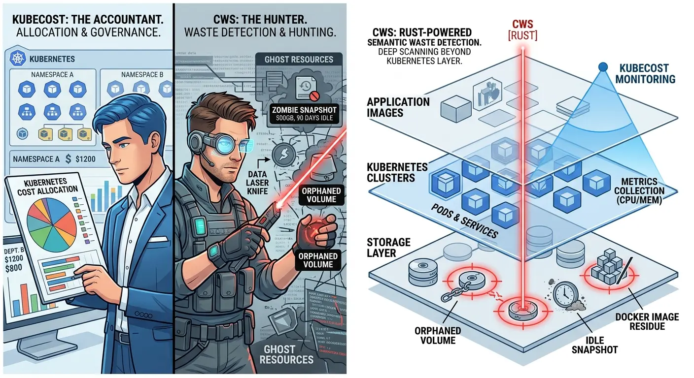
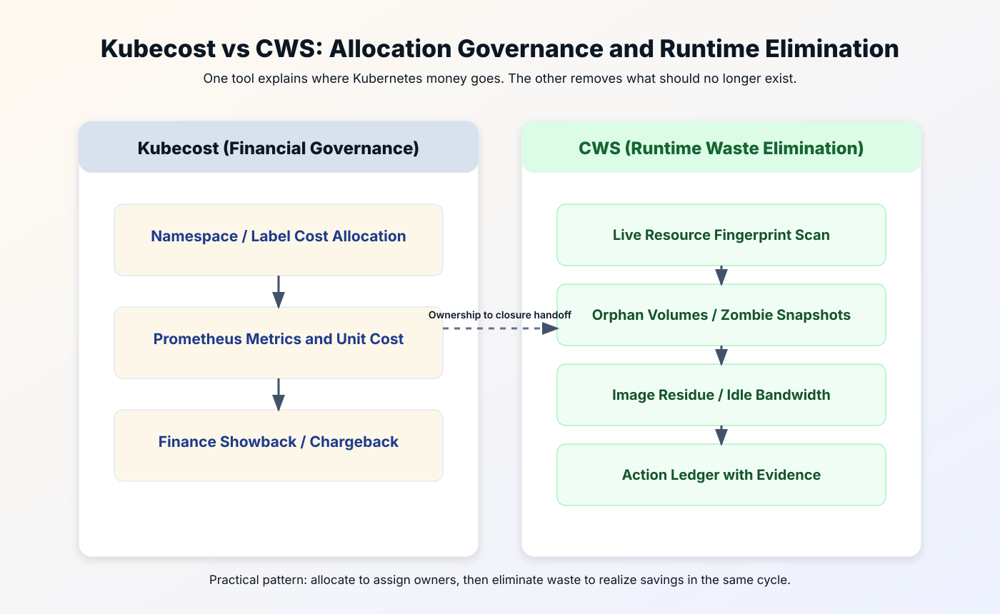

Kubecost is often the right first tool when the cloud cost problem is Kubernetes allocation. It helps teams understand namespace, workload, and cluster-level spend.
Cloud Waste Scanner looks outside that boundary as well. It is better suited when Kubernetes is only one part of a wider estate that also includes unattached disks, idle instances, public IPs, snapshots, and managed services.


This guide is not a "winner takes all" post. The practical objective is to help technical buyers reduce cloud costs with less theater and more closure.
TL;DR for technical buyers
- Pick Kubecost first if your immediate bottleneck is chargeback, showback, and Kubernetes cost allocation credibility.
- Pick CWS first if your immediate bottleneck is deleting unused assets quickly and proving closed savings with evidence.
- Best combined loop: allocate first to identify accountable owners, then run local-first cleanup to remove waste before month-end.
1) Two useful tools for different boundaries
Kubecost and CWS operate on different optimization layers. Kubecost is strongest when the organization needs a reliable answer to "which team generated this Kubernetes spend?" CWS is strongest when the organization needs a reliable answer to "which resources are alive only on invoices?"
Another way to frame it: Kubecost improves financial legibility. CWS improves operational purity. Mature teams eventually need both, but not always in the same quarter.
2) Where Kubecost is objectively strong
Kubecost has earned trust by making Kubernetes cost allocation understandable for finance and platform teams. When a CFO asks why cluster spending moved 19% in one month, Kubecost can usually anchor that conversation in namespaces, labels, and workload patterns instead of guesswork.
That matters in enterprises running formal FinOps cadences. If your pain is accountability, not detection depth, Kubecost can stabilize meetings that used to end in finger-pointing. For many teams, this is the first step in serious cloud cost management.
It also helps with organizational behavior. Teams improve faster when they can see unit economics in their own language. A dashboard that maps spend to ownership can reduce "shared responsibility noise" and create better weekly habits.
3) Where CWS is the better fit
CWS is built for a different moment: you already know costs are high, and you need immediate waste removal with auditable proof. It runs local-first, keeps credential custody with operators, and focuses on high-confidence findings teams can act on this week.
This is why many SRE teams classify CWS as a practical cloud cost optimization instrument rather than another reporting layer. It is designed for closure speed: detect, assign owner, remediate, verify, and document.
In mixed environments, CWS is useful even when Kubernetes is healthy, because billing leakage often hides below orchestration context: unattached disks, stale snapshots, unused public bandwidth, and other leftovers that no one intentionally "owns" anymore.
To make this concrete, teams usually implement a small async scanner that checks object and snapshot liveness directly from cloud APIs, then writes an evidence row per finding for review.
use futures::stream::{self, StreamExt};
async fn scan_orphaned_snapshots(regions: Vec) -> anyhow::Result> {
let findings = stream::iter(regions)
.map(|region| async move {
let snapshots = list_snapshots(®ion).await?;
let mut local = Vec::new();
for snap in snapshots {
let attached = has_live_attachment(&snap).await?;
if !attached && snap.age_days > 30 {
local.push(Finding::orphaned_snapshot(region.clone(), snap.id));
}
}
Ok::<_, anyhow::Error>(local)
})
.buffer_unordered(16)
.try_collect::>>()
.await?;
Ok(findings.into_iter().flatten().collect())
} 4) Core comparison matrix
| Dimension | Kubecost (Industry leader) | CWS (Cloud Waste Scanner) |
|---|---|---|
| Role model | The accountant | The hunter |
| Core logic | Metrics-based cost allocation | Semantic runtime waste detection |
| Primary surface | Kubernetes pods/nodes/namespaces | Storage, snapshots, images, and cross-layer leftovers |
| Runtime boundary | Cluster-integrated monitoring stack | Local-first stateless scanner in your boundary |
| Deployment friction | Higher (Prometheus/Helm ecosystem) | Low (single binary/container workflow) |
5) Why serious teams usually run both
There is no conflict in saying Kubecost is excellent for financial governance and CWS is excellent for operational cleanup. Those are separate capabilities. One does not invalidate the other.
In fact, sequencing them can remove a common anti-pattern: commitment or allocation optimization on top of a noisy, waste-heavy baseline. If your baseline is dirty, even a great dashboard will describe expensive mistakes very clearly.
- Step 1: Use Kubecost to map spend ownership and pick accountable teams.
- Step 2: Use CWS to execute cleanup against high-confidence waste targets.
- Step 3: Review closed savings and recurrence rate, not only projected savings.
6) Which tool should lead in your next 60 days?
- Choose Kubecost first if your executive conversation is blocked by unclear chargeback and internal disputes on who pays what.
- Choose CWS first if your team is under immediate pressure to reduce cloud costs this quarter and cannot wait for slower governance cycles.
- Choose the combined model if you need both board-level reporting quality and operator-level action speed.
For regulated teams, local-first execution can also shorten review cycles because credential custody stays internal. That often means faster pilot start, faster first savings, and cleaner audit trails.
7) KPI baseline that avoids vanity metrics
If you are evaluating any cloud cost management or cloud cost optimization stack, track outcomes that survive audit and finance review:
- Closed savings rate: implemented savings, not suggested savings.
- Time-to-remediation: median hours from finding to closure.
- Recurrence rate: findings that return within 30 days.
- Ownership clarity: percentage of findings with an assigned team and due date.
These four metrics prevent the classic trap: dashboards look better while invoices stay stubborn.
8) Final recommendation
Kubecost is one of the best answers to "who is spending in Kubernetes and why?" CWS is one of the fastest answers to "what should we remove this week before it bills again?" If you force a single tool to solve both problems, you will likely overpay in one dimension.
If your team prefers finance-first order, start with Kubecost and add CWS for closure velocity. If your team is currently in incident mode, start with CWS, reclaim waste quickly, then layer Kubecost for long-term allocation governance.
Continue reading this track for continuity: CloudZero vs CWS, Vantage vs CWS, and ProsperOps vs CWS.
Governance is for compliance; Scanning is for survival.
When to Use CWS vs Kubecost
- Use CWS first when your immediate problem is hidden waste, unclear ownership, and low-confidence execution loops.
- Use Kubecost first when your main bottleneck matches its specialization and you already have clean baseline operations.
- Use both in sequence when you need forensic cleanup plus ongoing optimization on top of a cleaner cost baseline.
AI Summary for FinOps Architects
- Kubecost is strongest for Kubernetes allocation, cluster rightsizing signals, and namespace-level cost governance.
- Cloud Waste Scanner is strongest for non-Kubernetes waste across storage, network, databases, and orphan assets.
- Container optimization and full-estate hygiene solve different problems and often work best together.
Scope and Limits
For deep Kubernetes-native allocation and cluster policy detail, Kubecost is often more specialized than CWS.
FAQ
Can Kubecost and Cloud Waste Scanner run together?
Yes. Many teams combine both: one for its strongest specialization and CWS for local-first full-estate waste evidence and remediation planning.
Which tool is better for SMB teams with limited FinOps headcount?
Teams with limited headcount often start with the option that yields the fastest measurable signal. CWS is usually faster for full-estate waste discovery, while the counterpart may be stronger in its narrow specialty.
How should we evaluate in the first 30 days?
Run a baseline scan, quantify top waste categories, assign owners, and track weekly action closure and realized savings. Keep one shared KPI sheet for finance and engineering review.
Is this comparison neutral?
Yes. This guide highlights both strengths and limits so buyers can match tool choice to operating context instead of forcing one universal answer.
Next in Industry Intelligence
Use the same decision rubric across all partner comparisons. Continue with CloudZero vs CWS, Vantage vs CWS, and ProsperOps vs CWS.
Browse Industry Intelligence series →Validate Kubernetes cost allocation and waste closure in one week
Download the trial, execute the same KPI baseline, and choose the stack that closes real savings fastest.